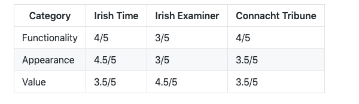
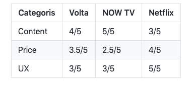

Blog Posts

Functionality of news websites
Without going into too long of a preamble, we all know the popularity of online news has increased as print media has suffered. Most every publication has a website now or at least some online presence. It's important to remember that this isn't necessarily by choice and some papers and broadcast organisations are still trying to drive revenue in more traditional ways. Here I'll explain why some news websites work well, while others perhaps choose not too.
The Irish Times
The paper of record offers unsubscribed readers a selection of free articles each day before you hit the paywall. The desktop version is excellence. It's easy to navigate, categories are marked out clearly and the search function brings up stories in order of publication - which is not always the case across other websites. Sadly the Irish Times app has no search function that I can find.
The Irish Examiner
The number one selling paper in the south of the country is very much still dedicated to pushing its print editions. Its website aesthetically isn't much to look at. A plain white background, black text and the odd coloured bar slotted in here and there, which do little to engage the senses. The content is excellent but the images could be bigger. Sadly I'll have to return to my biggest pet peeve, the search function. I was going to complain about how it throws up results in random order but when testing it today (16/10), it wasn't working!
The Connacht Tribune
The hometown paper's website, and fair enough, is there to drive the paper sales and recruit more online subscribers. Plenty of thought has been put into the website's design. It's bright, engaging and simple to use. It's one major pitfall is it only gives us the start each article, at which point you must subscribe to get the rest. It's a sales decision, and no one can judge too harshly, but I find it annoying.

Horses of Course Streaming Services
We all know there are countless streaming services available these days and most have very similar features - HD video, downloadable content, favourites lists etc. So I thought I'd present what I think are the unique selling points and downsides of three quite different streaming services that are available to Irish audiences.
Volta
We all know there are countless streaming services available these days and most have very similar features - HD video, downloadable content, favourites lists etc. So I thought I'd present what I think are the unique selling points and downsides of three quite different streaming services that are available to Irish audiences.
Now TV
"Get your weekend sports pass," if you don't have sky sports and it's the final day of the Premier League then, by all means, go with God and spend a tenner on NOW TV. If you want to Chromecast it from your phone that's even better. But, if you're looking for a simple to use alternative to a regular skybox or Netflix subscription for mindless viewing than save yourself the frustration. NOW TV for me is ideal if you know exactly what you want and how to get it. Like Volta the user experience (UX) isn't that intuitive. Having said that, if you're a fan of HBO then a lot can be forgiven.

Netflix
Best in class for simplicity of use and universal appeal. I keep a Netflix account for the handiness of sticking on a comedy during a lunch break or for the rare top-class original documentaries on offer. It's UX far outperforms any other site in my view and is undoubtedly responsible for it's continued success.

